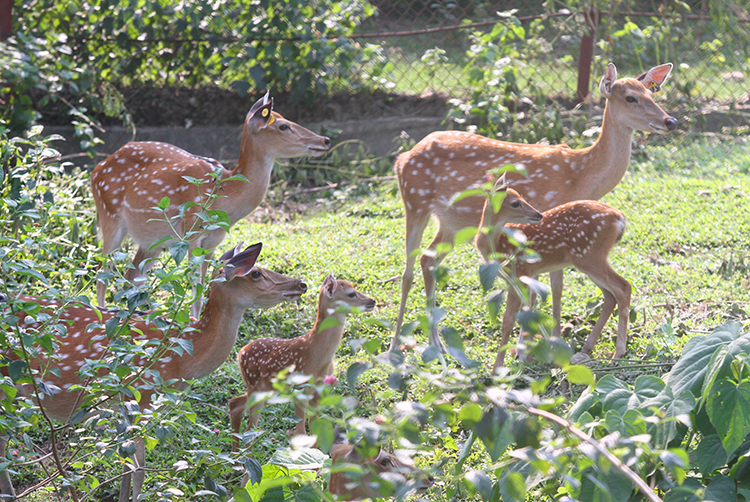

Hươu sao (Cervus nippon) còn được gọi là Hươu đốm hoặc Hươu Nhật Bản, là một loài hươu có nguồn gốc ở phần lớn Đông Á và được du nhập đến nhiều nơi khác trên thế giới. Trước đây được tìm thấy từ miền bắc Việt Nam ở miền nam đến vùng Viễn Đông của Nga ở miền bắc, hiện nay nó không phổ biến ở những khu vực này, ngoại trừ Nhật Bản, nơi loài này sinh sôi quá mức. Ở Nhật Bản, tên của nó bắt nguồn từ shika (鹿), từ tiếng Nhật có nghĩa là "con nai". Ở Nhật Bản, loài này được gọi là nihonjika (ニ ホ ン ジ カ （日本 鹿）, "hươu Nhật Bản").
Phân loại
Hươu sao là một thành viên của giống Cervus, một nhóm hươu còn được gọi là "hươu thực thụ". Trước đây, hươu sao được xếp cùng giống này này với chín loài khác. Hiện nay, chỉ còn lại loài hươu sao và hươu đỏ, chúng được chia thành ba loài riêng biệt: hươu đỏ châu Âu, hươu đỏ Trung Á và nai sừng tấm Mỹ (mặc dù điều này vẫn còn gây tranh cãi). Bằng chứng DNA gần đây cho thấy những con hươu này không có quan hệ họ hàng chặt chẽ như người ta vẫn nghĩ trước đây, dẫn đến việc tạo ra các loài và giống mới.
Tình trạng ô nhiễm gen nghiêm trọng đã xảy ra ở nhiều quần thể, đặc biệt là ở Trung Quốc. Do đó, tình trạng của nhiều loài phụ vẫn chưa rõ ràng. Trạng thái của C. n. hortulorum đặc biệt không chắc chắn và trên thực tế có thể có nguồn gốc hỗn hợp, do đó nó không được liệt kê ở đây
Phần mô tả
Hươu sao một trong số ít loài hươu không bị mất đốm khi trưởng thành. Các mẫu đốm thay đổi theo khu vực. Các loài phụ trên đất liền có các đốm lớn hơn và rõ ràng hơn, trái ngược với các phân loài Đài Loan và Nhật Bản, các đốm này gần như không nhìn thấy. Nhiều quần thể được giới thiệu đến từ Nhật Bản, vì vậy chúng cũng thiếu các đốm đáng kể.
Màu sắc của lông từ màu gỗ dái ngựa đến màu đen, và các cá thể màu trắng cũng được biết đến. Trong suốt mùa đông, bộ lông trở nên sẫm màu hơn và xù xì hơn và các đốm ít nổi bật hơn, và một chiếc bờm hình thành ở mặt sau cổ của con đực. Chúng là động vật ăn cỏ có kích thước trung bình, mặc dù chúng có sự thay đổi kích thước đáng kể trên một số phân loài và sự dị hình giới tính đáng kể, với con đực luôn lớn hơn nhiều so với con cái. Chúng có thể cao từ 50 đến 110 cm (20 đến 43 in) ở vai và từ 95 đến 180 cm (37 đến 71 in) ở chiều dài đầu và thân. Đuôi dài khoảng 7,5–13 cm (3,0–5,1 in).
Hươu sao có sừng thẳng đứng, mập mạp với một chiếc chùy nhô lên từ đỉnh lông mày và một bức tường rất dày. Một mốc trung gian hướng về phía trước ngắt dòng lên trên cùng, thường được chia. Đôi khi, gạc hươu sao phát triển một số vết cọ (vùng bằng phẳng). Con cái có một cặp mụn đen đặc biệt trên trán. Gạc có thể dài từ 28 đến 45 cm (11 đến 18 in) đến hơn 80 cm (30 in), tùy thuộc vào phân loài. Hươu đực cũng có bờm đặc biệt trong thời kỳ giao phối của chúng (mùa động dục) Hành vi
Hành vi
Hươu sao có thể hoạt động cả ngày, dù ở những khu vực có nhiều người quấy rầy, chúng có xu hướng hoạt động về đêm. Di cư theo mùa được biết là xảy ra ở các khu vực miền núi, chẳng hạn như Nhật Bản, với phạm vi mùa đông thấp hơn tới 700 m (2.300 ft) so với phạm vi mùa hè. Lối sống khác nhau giữa các cá thể, với một số xảy ra đơn lẻ trong khi những con khác được tìm thấy trong các nhóm đơn giới. Các đàn lớn tập trung vào mùa thu và mùa đông. Con đực thường sống một mình trong nhiều năm đôi khi tạo thành bầy đàn cùng nhau. Những con cái chỉ tạo thành đàn trong mùa sinh sản. Hươu sao là loài có giọng hú cao, với hơn 10 âm thanh riêng lẻ, từ tiếng huýt sáo nhẹ đến tiếng hét lớn
Hươu sao đực có tính lãnh thổ và giữ hậu cung động vật trong thời gian động dục của chúng, cao điểm từ đầu tháng 9 đến tháng 10, nhưng có thể kéo dài đến mùa đông. Kích thước lãnh thổ thay đổi theo loại môi trường sống và kích thước của hươu đực; những con hươu đực mạnh, ưu tú có thể chứa tới 2 ha (5 acres). Các vùng lãnh thổ được đánh dấu bằng một loạt các hố nông hoặc "vết cắt", tức là các hố đào (rộng tới 1,6m và sâu 0,3m) với chân trước hoặc sừng, để con đực đi tiểu và từ đó tỏa ra mùi xạ hương nồng nàn. Các cuộc chiến giữa những con đực đối địch để tranh chấp lãnh thổ, xảy ra bằng cách sử dụng móng guốc và sừng, đôi khi rất khốc liệt và kéo dài và thậm chí có thể gây tử vong.
Thời gian mang thai kéo dài 7 tháng. Dấu hiệu (không) đẻ ra một con hươu con, nặng 4,5 đến 7 kg (9,9 đến 15,4 lb), được ương đến 10 tháng. Hươu mẹ giấu con trong lớp lông rậm rạp kể từ khi được sinh ra ngay lập tức, hươu con vẫn rất yên tĩnh và tĩnh lặng trong khi đợi cho đến khi mẹ quay lại để bú. Hươu con trở nên độc lập từ 10 đến 12 tháng sau khi sinh, và đạt được thành thục sinh dục khi được 16 đến 18 tháng ở cả hai giới. Tuổi thọ trung bình là 15 đến 18 năm trong điều kiện nuôi nhốt, mặc dù một trường hợp được ghi nhận là sống 25 năm 5 tháng. Hươu sao có thể lai với hươu đỏ, họ hàng gần nhất; con cháu lai có thể có những ưu điểm thích nghi hơn những họ hàng thuần chủng.